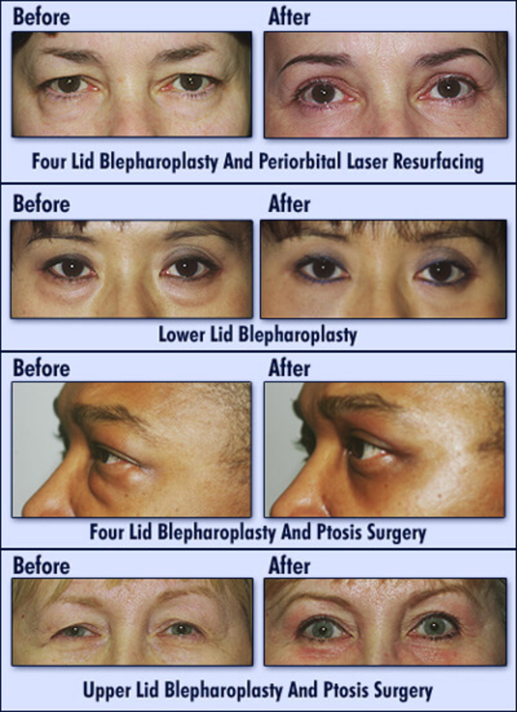

Deformaties in the eyelids caused from cancer created the need
for blepharoplasty. This would also be utilized for issues in vision with
droopy eyelids.

This desire to help people with injuries changed when there was a
want to look youthfull and more "awake". Surgery to improve
bagginess and puffiness in the eyes triumphed as abled bodied individuals
began to cosmetic eyelid surgery.
Trends calling for "cat eyes", "siren eyes", and "doe eyes" called for a
more angular or change in shape of the natural eye socket. This birthed
Canthoplasty to elongate to almond-shaped eyes.
NOSE
Injuries from athletes or just closed breathing canals called for
a surgery to help open these holes and allow for easy breathing.
Rhinoplasty became one of the most common surgeries to undergo
for nose injuries or breathing issues.
When it came to cosmetics this surgery was very popular due to how popular
eurocentric nose structure was and how easy the process itself was.
The procedure took only few hours to undergo, and the healing process
was as fast as 7-10 days.
Changes desired from this procedure include reduction in size,
turned up tip and help with symmetry. Many people desired a more button nose
look instead of a larger bridge that sticks out.
LIPS
Lip fillers date back to the early 19th century. These fillers were made from analogous fat and were
originally
made as reconstruction for facial deformities from tuberculosis. Only in the 1900s were lip fillers used for
purely cosmetic procedures. Over the decades, lip fillers were made of a series of resources including
liquid
paraffin, silicone, and bovine collagen. In the 90s, human collagen was used which skyrocketed the
popularity of
lip fillers. Today, FDA-approved lip injections are made from hyaluronic acid.
The popularity of lip fillers reached its peak with Kylie Jenner’s plastic surgery confession. Around 27,000
Americans had lip treatments in 2015. The popularity of larger-filled lips stayed in the spotlight until
2023
when more “natural” looking lips were in. Either way, lip augmentations go through trend cycles as with any
other form of plastic surgery. As a result, the downside of lip fillers is that they need to be updated.
This
can lead to numerous complications including compromised blood flow in the region.
Where the trend of lip fillers is going we do not know, but despite the dangers, they will consistently rise
and
fall.